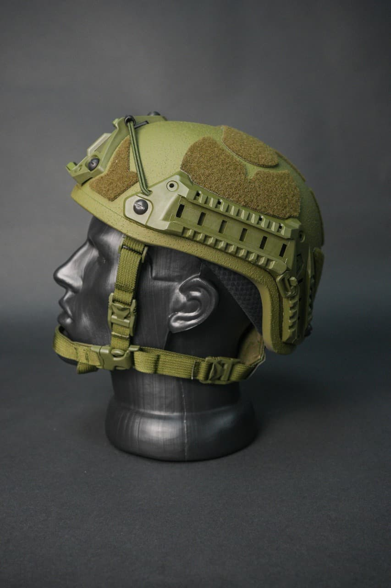
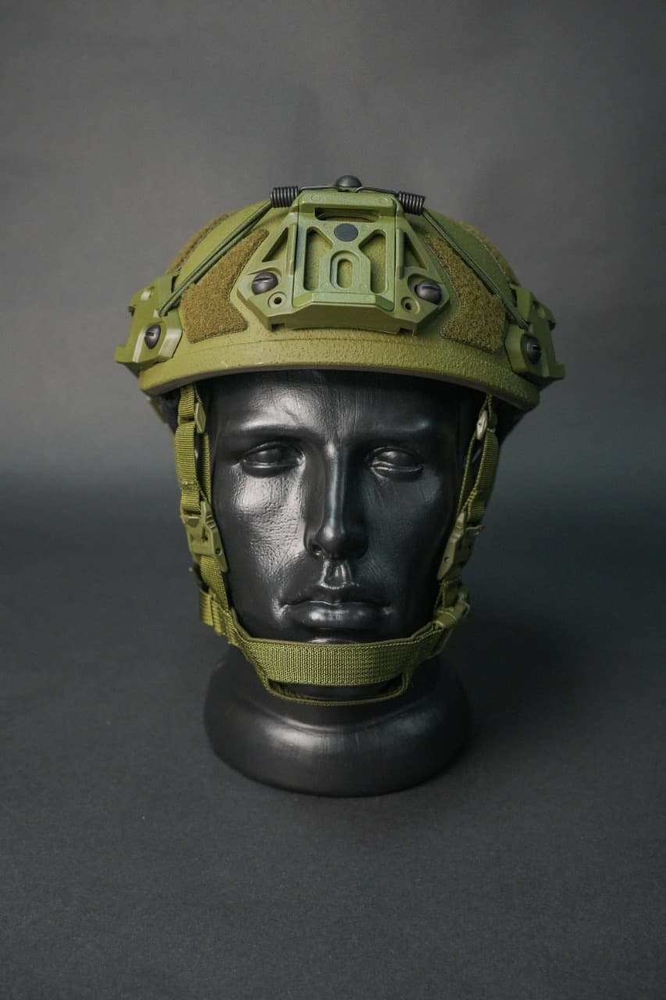
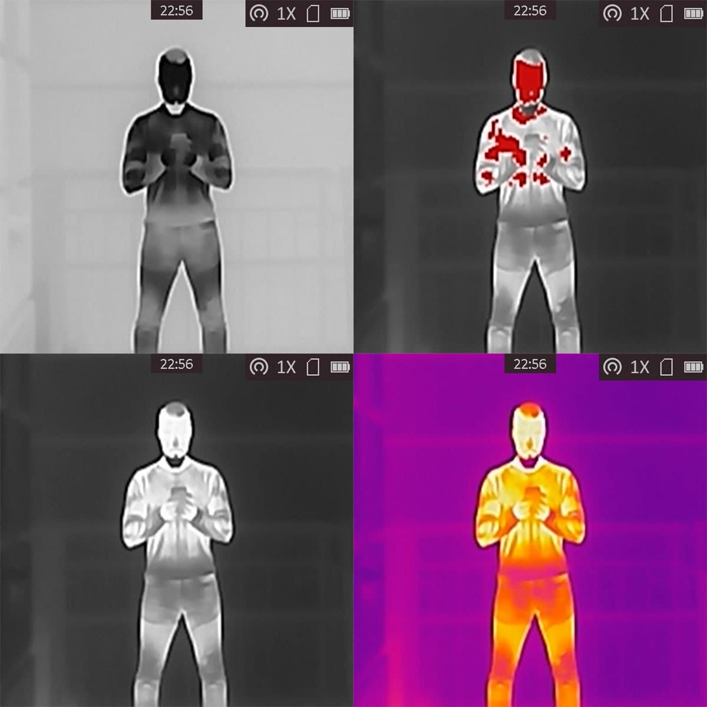
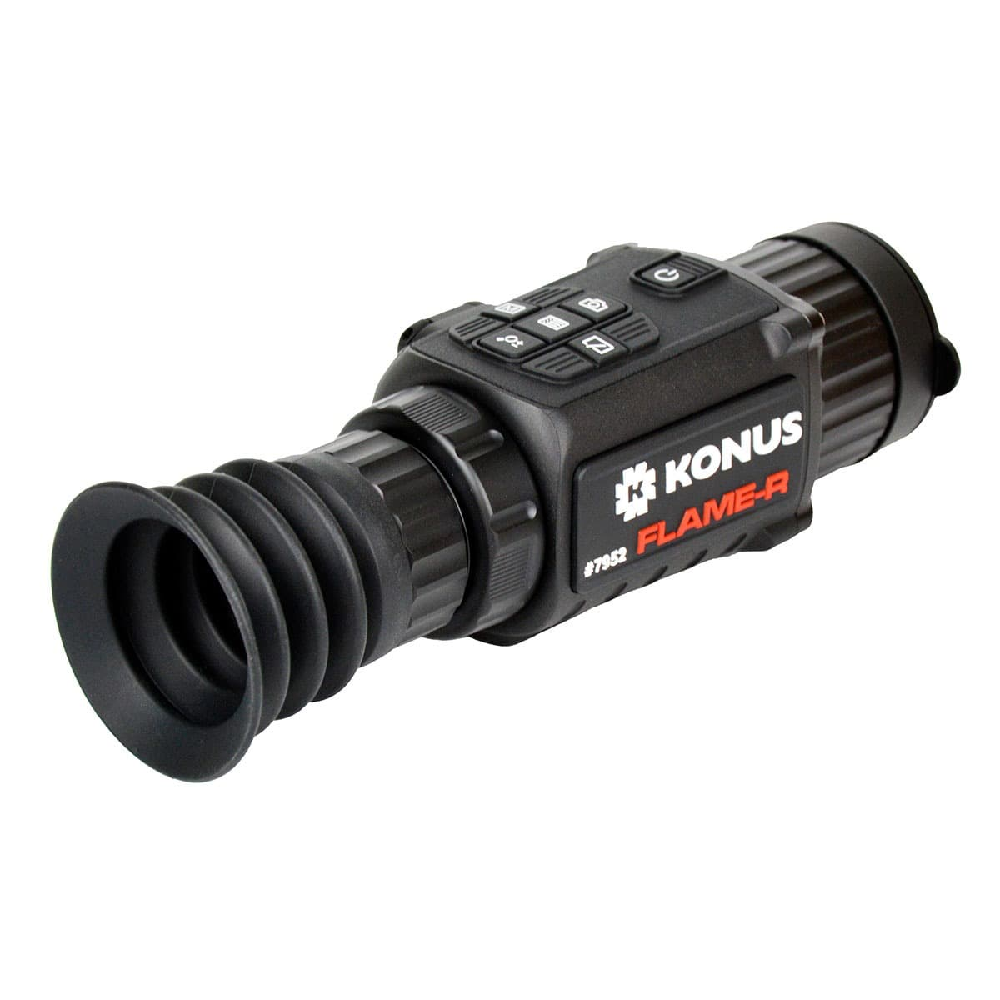
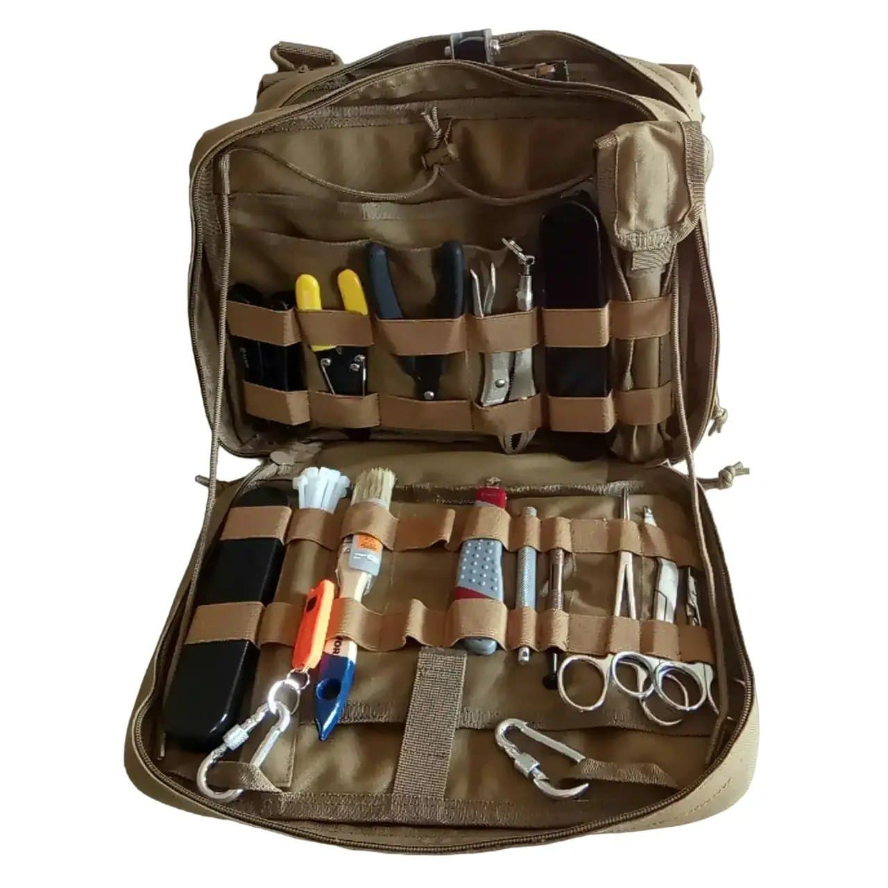
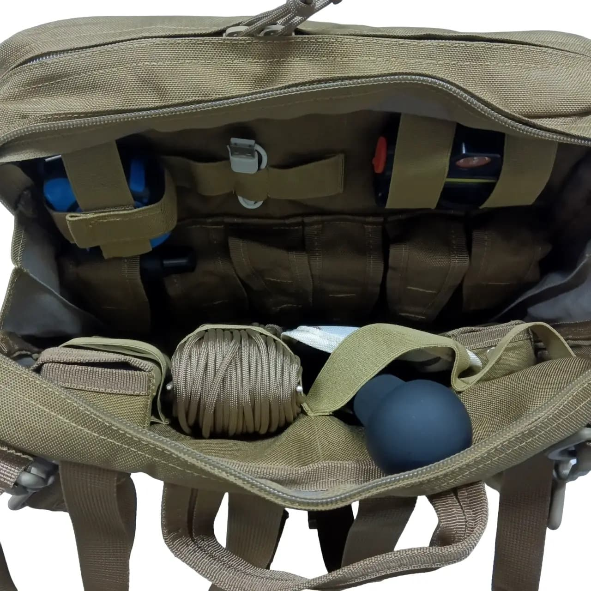
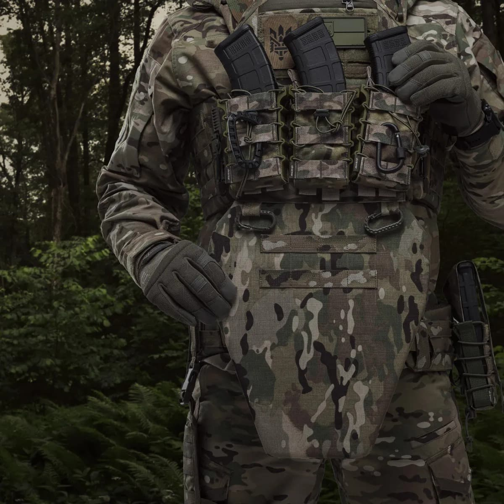
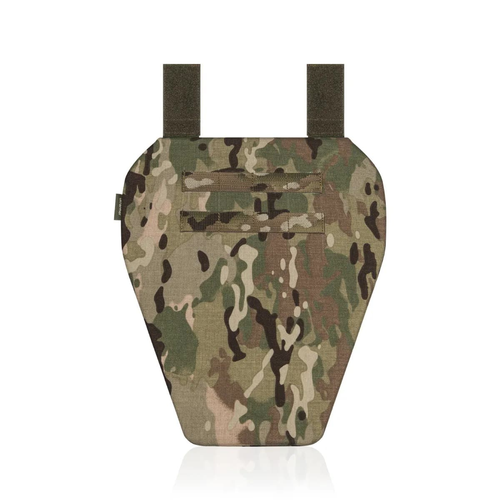

Ваше пожертвування може стати світлом надії для тих, хто потребує вашої допомоги прямо зараз. Зробіть крок до зміни життів українських військових та їх родин. Пожертвуйте сьогодні та дайте їм шанс на світле майбутнє.
-

Збройні сили України мають нагальну потребу у мобільності, а саме: їм необхідні автомобілі, що можуть проїжджати по бездоріжжю, матимуть високу прохідність та хорошу маневреність. Ідеально для цього піходять автомобілі типу Pick-up. Автомобілів потрібно багато, адже вони часто попадають під обстріли, виходять з ладу. В наших з вами силах допомогти армії не зупинятись та зібрати кошти на нові авто.
ПІКАП ДЛЯ ЗСУ
400 000 ₴
-

Це не просто професійна фототехніка, а передовий дрон для бойової розвідки. Їх активно використовують на фронті, щоб оцінювати ситуацію та зробити кадри місцевості. Завдяки якості оптики можна дізнатися про розклад ворожих сил до найдрібніших деталей та скоригувати вогонь своєї артилерії. А оскільки дрон DJI MAVIC 3T маленький і спритний - виявити в небі і збити його не так легко.
КВАДРОКОПТЕР DJI MAVIC 3T
240 000 ₴
-
 
BK-ACH – це сучасний балістичний шолом для армії, який можна ототожнити з американськими моделями ACH. Він розроблений таким чином, щоб забезпечити максимальну гнучкість, комфорт і дуже високий захист віт травм.Спеціальний процес виробництва EBSP забезпечує високий рівень захисту від усіх видів осколків, осколків і куль. Шолом і його частини стійкі до будь-яких погодних умов.
ШОЛОМ BK-ACH
20 000 ₴
-
 
Konus Flame-R 2.5x-20x — це високотехнологічний тепловізійний прилад, що має безліч функцій та особливостей, які дозволять використовувати його при вирішенні широкого спектра завдань. Оптичні характеристики та високі можливості електронних сенсорів і компонентів дозволять виявляти авто на відстані до 2 км і людину на відстані до 800 метрів.
Тепловізор Flame-R 2.5x-20x
50 800 ₴
-
 
Набір призначений для транспортування і зберігання стандартних і спеціальних приладів та інструментів, які використовуються для виконання специфічних завдань: огляду місць мінувань, пошуку вибухонебезпечних предметів, знешкодження боєприпасів та саморобних вибухових пристроїв. Комплексний набір включає модулі та пристосування для виконання всього комплексу робіт в різноманітних умовах.
КОМПЛЕКТ САПЕРА ЕОD-1
27 400 ₴
-
 
Забезпечує додатковий захист пахової зони від уражень уламків, рикошетів, шрапнелі та пострілів кулі 7,62 х 25 мм. ПСТ. за рахунок використання балістичного захисту 2-го класу, він кріпиться за допомогою липучки (велкро панелі). Серед першочергових задач (окрім очевидної - захисту паху) він виконує захист стегнової артерії (яка, на секундочку, є однією з найбільших артерій в тілі людини).
Протиуламковий фартух
6 000 ₴